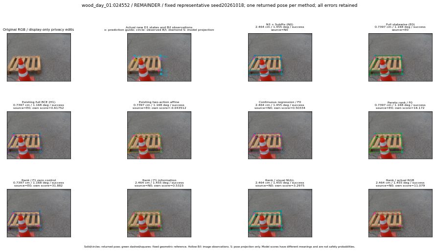

실선은 반환 자세, 초록 점선은 고정 기하 참조입니다. S는 영상 관측이 아닙니다. 점수는 모델별 의미가 다르며 보정된 안전 확률이 아닙니다. 개인정보 처리는 표시 사본에만 적용했습니다.
| 방법·seed | 위치 / 회전 / 공동성공 | 실제 출처 | 선택 후보 | 각 모델 자체 점수 |
|---|---|---|---|---|
| N0 | 2.464 cm / 1.455 deg / success | N0 | N/A | N/A |
| E0 | 0.7397 cm / 1.168 deg / success | E0 | N/A | N/A |
| E0_REGENERATED | 0.7397 cm / 1.168 deg / success | E0 | E0_REGENERATED | N/A |
| POSEFIX_SUBPIX_PF_ANCHOR | 3.175 cm / 1.287 deg / success | OTHER | N/A | N/A |
| POSEFIX_SUBPIX_YOLO_ANCHOR | 3.175 cm / 1.287 deg / success | OTHER | N/A | N/A |
| D1_H1_MLP_s20261018 | 0.7397 cm / 1.168 deg / success | E0 | E0_REGENERATED | 0.6175236701965332 |
| D1_H1_MLP_s20261019 | 0.7397 cm / 1.168 deg / success | E0 | E0_REGENERATED | 0.22577865421772003 |
| D1_H1_MLP_s20261020 | 0.7397 cm / 1.168 deg / success | E0 | E0_REGENERATED | 0.15008310973644257 |
| D1_H1_PAIR_MLP_s20261018 | 2.464 cm / 1.455 deg / success | N0 | N0 | -0.8662002682685852 |
| D1_H1_PAIR_MLP_s20261019 | 2.464 cm / 1.455 deg / success | N0 | N0 | -0.6346756815910339 |
| D1_H1_PAIR_MLP_s20261020 | 2.464 cm / 1.455 deg / success | N0 | N0 | -0.23631271719932556 |
| D1_H1_PAIR_ROLE_AFFINE_s20261018 | 0.7397 cm / 1.168 deg / success | E0 | E0_REGENERATED | -0.04351219907402992 |
| D1_H1_PAIR_ROLE_AFFINE_s20261019 | 0.7397 cm / 1.168 deg / success | E0 | E0_REGENERATED | -0.18797698616981506 |
| D1_H1_PAIR_ROLE_AFFINE_s20261020 | 0.7397 cm / 1.168 deg / success | E0 | E0_REGENERATED | -0.04520568996667862 |
| R_CONT_F0_s20261018 | 2.464 cm / 1.455 deg / success | N0 | N0 | 0.5033387541770935 |
| R_CONT_F0_s20261019 | 0.7397 cm / 1.168 deg / success | E0 | E0_REGENERATED | 0.5700688362121582 |
| R_CONT_F0_s20261020 | 0.7397 cm / 1.168 deg / success | E0 | E0_REGENERATED | 0.4849150478839874 |
| R_ORDER_F0_s20261018 | 0.7397 cm / 1.168 deg / success | E0 | E0_REGENERATED | 16.171506881713867 |
| R_ORDER_F0_s20261019 | 0.7397 cm / 1.168 deg / success | E0 | E0_REGENERATED | 13.673094749450684 |
| R_ORDER_F0_s20261020 | 0.7397 cm / 1.168 deg / success | E0 | E0_REGENERATED | -1.3307266235351562 |
| R_ORDER_F1_ZERO_s20261018 | 0.7397 cm / 1.168 deg / success | E0 | E0_REGENERATED | 31.881759643554688 |
| R_ORDER_F1_ZERO_s20261019 | 0.7397 cm / 1.168 deg / success | E0 | E0_REGENERATED | 39.36293411254883 |
| R_ORDER_F1_ZERO_s20261020 | 2.464 cm / 1.455 deg / success | N0 | N0 | 15.08459186553955 |
| R_ORDER_F1_s20261018 | 2.464 cm / 1.455 deg / success | N0 | N0 | 0.532296895980835 |
| R_ORDER_F1_s20261019 | 2.464 cm / 1.455 deg / success | N0 | N0 | 8.182153701782227 |
| R_ORDER_F1_s20261020 | 0.7397 cm / 1.168 deg / success | E0 | E0_REGENERATED | 2.9296324253082275 |
| V_ORDER_NULL_s20261018 | 2.464 cm / 1.455 deg / success | N0 | N0 | 3.297544240951538 |
| V_ORDER_NULL_s20261019 | 2.464 cm / 1.455 deg / success | N0 | N0 | 4.0055084228515625 |
| V_ORDER_NULL_s20261020 | 0.7397 cm / 1.168 deg / success | E0 | E0_REGENERATED | 7.967522621154785 |
| V_ORDER_RGB_s20261018 | 2.464 cm / 1.455 deg / success | N0 | N0 | 11.078869819641113 |
| V_ORDER_RGB_s20261019 | 2.464 cm / 1.455 deg / success | N0 | N0 | 4.0380859375 |
| V_ORDER_RGB_s20261020 | 0.7397 cm / 1.168 deg / success | E0 | E0_REGENERATED | -5.734267234802246 |